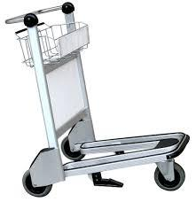
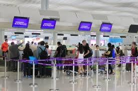
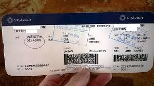
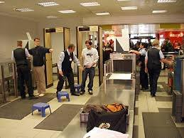
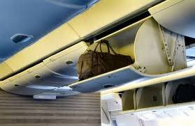
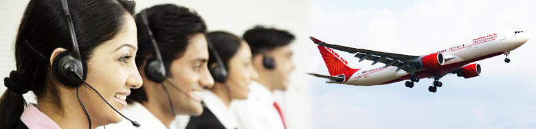

Instructions for someone traveling in a domestic flight for the first time in India
Before You Fly
Arrive at the airport at least two hours before the scheduled departure of your flight.
If you have too much luggage to carry in hand, get a luggage trolley, which is normally free to use, from the airport.

Show the copy of your flight ticket and your identity card at the airport entry to the Central Industrial Security Force (CISF) guard posted there.
He will check the details and let you into the airport - do not forget to collect your ticket and ID card.
Either look for or ask anyone around to direct you to the baggage X-Ray screening area corresponding to your airline.
At the baggage screening area, get the bags that you intend to "check-in", screened (X-Rayed). After checking, a sticker will be applied on the screened bags in such a way that the bags cannot be opened without tearing the sticker. So, do not open your bags after screening.
Proceed to the "check-in" counter corresponding to your airline. You can identify this by the airline logo displayed above the counter. Checking in essentially tells the airline that you have arrived and are ready to board the flight. If in doubt, ask.

You will have to wait in queue at the check-in counter and when your turn comes, proceed to the check-in counter and display your ticket and identity card to the person at the counter. You need not handover the bag that you plan to carry with yourself in the flight. But, the bags that you want to "check-in" or want the airline to carry on your behalf in the separate baggage area of the aircraft, should be handed over. Those bags will be weighed and measured to ensure that they are within the baggage rules and then sent away for loading. You only need to worry about them after landing at your destination.

You will then be given your boarding pass along with the baggage receipt (which will help you in locating your luggage at the destination) and one baggage tag for each piece of luggage that you are carry with you inside the flight cabin (hand baggage).
Collect the boarding pass, baggage tag, bag receipt, copy of your ticket, your identity card and your hand baggage and move away from the counter so that the next person in queue can check-in.
Attach the baggage tag to your hand baggage.

Proceed for security check where you will have to wait in queue and then you will have to place your hand baggage on a conveyor belt for X-Ray and screening - if you have a laptop in the bag, you will have to remove it and place is separately for screening. You will also have to put you mobile phone, watch, wallet, purse, belt etc. for scanning before going through security.
You will be asked to walk through a metal detector as part of security.
In flight

When all passengers have boarded, the crew will prepare the flight for takeoff.
The crew will demonstrate safety instructions and emergency procedures.
There will be announcements from the captain about the details of the flight - destination, expected duration of flight, weather etc.
Once at cruising altitude, the seat belt sign will be turned off, but it is advisable to keep the seat belt on while seated, just in case turbulence is encountered.
You can use the toilet when the seat belt sign is switched off.
Depending on the airline you might be served food and drinks as part of the service or you may have to buy it, if you want it. Be aware that food in flights is at least twice as expensive compared to the normal price.
If you would like to summon an air hostess, you can use a button above your seat, to do so.
Sit back, relax and enjoy your flight.
Once the flight is close to the destination, the captain will announce that the flight is ready to land and will request the cabin crew to prepare for landing.
After the flight

Once at your destination airport, look for airport signs and make your way to the baggage carousel - it is like a conveyor belt where you need to collect your checked-in baggage.
Get a luggage trolley, if required and wait for your checked in bags to arrive
Congratulations!
You have just completed your first flight! Wish you many more exciting flights over the years.